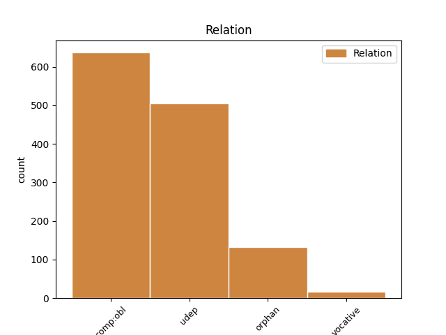
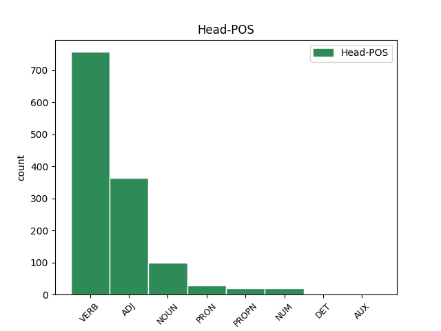
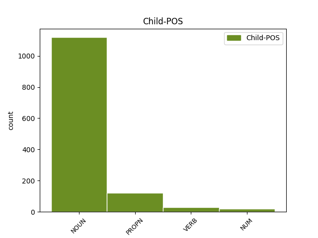

Distribution of features within this leaf



Agreement Rules sorted by frequency.
- When the dependent token is the underspecified dependency(udep) of the head token, and the dependent token is NOUN.
1 Quamquam _ _ _ _ 0 _ _ _
2 te _ _ _ _ 0 _ _ _
3 Marce _ _ _ _ 0 _ _ _
4 fili _ _ _ _ 0 _ _ _
5 annum annus NOUN Nb Case=Acc|Gender=Masc|Number=Sing 7 udep _ ref=1.1
6 iam _ _ _ _ 0 _ _ _
7 audientem audio VERB V- Case=Acc|Gender=Masc|Number=Sing|Tense=Pres|VerbForm=Part|Voice=Act 0 _ _ _
8 Cratippum _ _ _ _ 0 _ _ _
9 id _ _ _ _ 0 _ _ _
10 que _ _ _ _ 0 _ _ _
11 Athenis _ _ _ _ 0 _ _ _
12 abundare _ _ _ _ 0 _ _ _
13 oportet _ _ _ _ 0 _ _ _
14 praeceptis _ _ _ _ 0 _ _ _
15 institutis _ _ _ _ 0 _ _ _
16 que _ _ _ _ 0 _ _ _
17 philosophiae _ _ _ _ 0 _ _ _
18 propter _ _ _ _ 0 _ _ _
19 summam _ _ _ _ 0 _ _ _
20 et _ _ _ _ 0 _ _ _
21 doctoris _ _ _ _ 0 _ _ _
22 auctoritatem _ _ _ _ 0 _ _ _
23 et _ _ _ _ 0 _ _ _
24 urbis _ _ _ _ 0 _ _ _
25 quorum _ _ _ _ 0 _ _ _
26 alter _ _ _ _ 0 _ _ _
27 te _ _ _ _ 0 _ _ _
28 scientia _ _ _ _ 0 _ _ _
29 augere _ _ _ _ 0 _ _ _
30 potest _ _ _ _ 0 _ _ _
31 altera _ _ _ _ 0 _ _ _
32 exemplis _ _ _ _ 0 _ _ _
33 tamen _ _ _ _ 0 _ _ _
34 ut _ _ _ _ 0 _ _ _
35 ipse _ _ _ _ 0 _ _ _
36 ad _ _ _ _ 0 _ _ _
37 meam _ _ _ _ 0 _ _ _
38 utilitatem _ _ _ _ 0 _ _ _
39 semper _ _ _ _ 0 _ _ _
40 cum _ _ _ _ 0 _ _ _
41 Graecis _ _ _ _ 0 _ _ _
42 Latina _ _ _ _ 0 _ _ _
43 coniunxi _ _ _ _ 0 _ _ _
44 ne _ _ _ _ 0 _ _ _
45 que _ _ _ _ 0 _ _ _
46 id _ _ _ _ 0 _ _ _
47 in _ _ _ _ 0 _ _ _
48 philosophia _ _ _ _ 0 _ _ _
49 solum _ _ _ _ 0 _ _ _
50 sed _ _ _ _ 0 _ _ _
51 etiam _ _ _ _ 0 _ _ _
52 in _ _ _ _ 0 _ _ _
53 dicendi _ _ _ _ 0 _ _ _
54 exercitatione _ _ _ _ 0 _ _ _
55 feci _ _ _ _ 0 _ _ _
56 idem _ _ _ _ 0 _ _ _
57 tibi _ _ _ _ 0 _ _ _
58 censeo _ _ _ _ 0 _ _ _
59 faciendum _ _ _ _ 0 _ _ _
60 ut _ _ _ _ 0 _ _ _
61 par _ _ _ _ 0 _ _ _
62 sis _ _ _ _ 0 _ _ _
63 in _ _ _ _ 0 _ _ _
64 utriusque _ _ _ _ 0 _ _ _
65 orationis _ _ _ _ 0 _ _ _
66 facultate _ _ _ _ 0 _ _ _
1 Ut _ _ _ _ 0 _ _ _
2 enim _ _ _ _ 0 _ _ _
3 in _ _ _ _ 0 _ _ _
4 corporibus _ _ _ _ 0 _ _ _
5 magnae _ _ _ _ 0 _ _ _
6 dissimilitudines _ _ _ _ 0 _ _ _
7 sunt _ _ _ _ 0 _ _ _
8 alios alius ADJ Px Case=Acc|Gender=Masc|Number=Plur 0 _ _ _
9 videmus _ _ _ _ 0 _ _ _
10 velocitate _ _ _ _ 0 _ _ _
11 ad _ _ _ _ 0 _ _ _
12 cursum _ _ _ _ 0 _ _ _
13 alios _ _ _ _ 0 _ _ _
14 viribus _ _ _ _ 0 _ _ _
15 ad _ _ _ _ 0 _ _ _
16 luctandum _ _ _ _ 0 _ _ _
17 valere _ _ _ _ 0 _ _ _
18 itemque _ _ _ _ 0 _ _ _
19 in _ _ _ _ 0 _ _ _
20 formis _ _ _ _ 0 _ _ _
21 aliis _ _ _ _ 0 _ _ _
22 dignitatem _ _ _ _ 0 _ _ _
23 inesse _ _ _ _ 0 _ _ _
24 aliis _ _ _ _ 0 _ _ _
25 venustatem venustas NOUN Nb Case=Acc|Gender=Fem|Number=Sing 8 orphan _ ref=1.107
26 sic _ _ _ _ 0 _ _ _
27 in _ _ _ _ 0 _ _ _
28 animis _ _ _ _ 0 _ _ _
29 exsistunt _ _ _ _ 0 _ _ _
30 maiores _ _ _ _ 0 _ _ _
31 etiam _ _ _ _ 0 _ _ _
32 varietates _ _ _ _ 0 _ _ _
1 Ut _ _ _ _ 0 _ _ _
2 enim _ _ _ _ 0 _ _ _
3 sermone _ _ _ _ 0 _ _ _
4 eo _ _ _ _ 0 _ _ _
5 debemus _ _ _ _ 0 _ _ _
6 uti _ _ _ _ 0 _ _ _
7 qui _ _ _ _ 0 _ _ _
8 innatus _ _ _ _ 0 _ _ _
9 est _ _ _ _ 0 _ _ _
10 nobis _ _ _ _ 0 _ _ _
11 ne _ _ _ _ 0 _ _ _
12 ut _ _ _ _ 0 _ _ _
13 quidam quidam ADJ Px Case=Nom|Gender=Masc|Number=Sing 0 _ _ _
14 Graeca _ _ _ _ 0 _ _ _
15 verba _ _ _ _ 0 _ _ _
16 inculcantes inculco VERB V- Case=Nom|Gender=Masc|Number=Plur|Tense=Pres|VerbForm=Part|Voice=Act 13 orphan _ ref=1.111
17 iure _ _ _ _ 0 _ _ _
18 optimo _ _ _ _ 0 _ _ _
19 rideamur _ _ _ _ 0 _ _ _
20 sic _ _ _ _ 0 _ _ _
21 in _ _ _ _ 0 _ _ _
22 actiones _ _ _ _ 0 _ _ _
23 omnem _ _ _ _ 0 _ _ _
24 que _ _ _ _ 0 _ _ _
25 vitam _ _ _ _ 0 _ _ _
26 nullam _ _ _ _ 0 _ _ _
27 discrepantiam _ _ _ _ 0 _ _ _
28 conferre _ _ _ _ 0 _ _ _
29 debemus _ _ _ _ 0 _ _ _
1 erunt _ _ _ _ 0 _ _ _
2 enim _ _ _ _ 0 _ _ _
3 ex _ _ _ _ 0 _ _ _
4 hoc _ _ _ _ 0 _ _ _
5 quinque _ _ _ _ 0 _ _ _
6 in _ _ _ _ 0 _ _ _
7 domo _ _ _ _ 0 _ _ _
8 una _ _ _ _ 0 _ _ _
9 divisi _ _ _ _ 0 _ _ _
10 tres tres NUM Ma Case=Nom|Gender=Masc|Number=Plur 0 _ _ _
11 in _ _ _ _ 0 _ _ _
12 duo _ _ _ _ 0 _ _ _
13 et _ _ _ _ 0 _ _ _
14 duo duo NUM Ma Case=Nom|Gender=Masc|Number=Plur 10 orphan _ ref=LUKE_12.52
15 in _ _ _ _ 0 _ _ _
16 tres _ _ _ _ 0 _ _ _
1 Sed _ _ _ _ 0 _ _ _
2 tum _ _ _ _ 0 _ _ _
3 servare _ _ _ _ 0 _ _ _
4 illud _ _ _ _ 0 _ _ _
5 poëtas _ _ _ _ 0 _ _ _
6 quod _ _ _ _ 0 _ _ _
7 deceat _ _ _ _ 0 _ _ _
8 dicimus _ _ _ _ 0 _ _ _
9 cum _ _ _ _ 0 _ _ _
10 id _ _ _ _ 0 _ _ _
11 quod _ _ _ _ 0 _ _ _
12 quaque _ _ _ _ 0 _ _ _
13 persona _ _ _ _ 0 _ _ _
14 dignum _ _ _ _ 0 _ _ _
15 est _ _ _ _ 0 _ _ _
16 et _ _ _ _ 0 _ _ _
17 fit _ _ _ _ 0 _ _ _
18 et _ _ _ _ 0 _ _ _
19 dicitur _ _ _ _ 0 _ _ _
20 ut _ _ _ _ 0 _ _ _
21 si _ _ _ _ 0 _ _ _
22 Aeacus _ _ _ _ 0 _ _ _
23 aut _ _ _ _ 0 _ _ _
24 Minos _ _ _ _ 0 _ _ _
25 diceret _ _ _ _ 0 _ _ _
26 óderint _ _ _ _ 0 _ _ _
27 dum _ _ _ _ 0 _ _ _
28 métuant _ _ _ _ 0 _ _ _
29 aut _ _ _ _ 0 _ _ _
30 natís natus NOUN Nb Case=Dat|Gender=Masc|Number=Plur 31 comp:obl _ ref=1.97
31 sepulchro sepulcrum NOUN Nb Case=Dat|Gender=Neut|Number=Sing 0 _ _ _
32 ipse _ _ _ _ 0 _ _ _
33 ést _ _ _ _ 0 _ _ _
34 parens _ _ _ _ 0 _ _ _
35 indecorum _ _ _ _ 0 _ _ _
36 videretur _ _ _ _ 0 _ _ _
37 quod _ _ _ _ 0 _ _ _
38 eos _ _ _ _ 0 _ _ _
39 fuisse _ _ _ _ 0 _ _ _
40 iustos _ _ _ _ 0 _ _ _
41 accepimus _ _ _ _ 0 _ _ _
1 qua _ _ _ _ 0 _ _ _
2 re _ _ _ _ 0 _ _ _
3 ut _ _ _ _ 0 _ _ _
4 homini _ _ _ _ 0 _ _ _
5 curioso _ _ _ _ 0 _ _ _
6 ita _ _ _ _ 0 _ _ _
7 perscribe _ _ _ _ 0 _ _ _
8 ad _ _ _ _ 0 _ _ _
9 me _ _ _ _ 0 _ _ _
10 quid _ _ _ _ 0 _ _ _
11 primus _ _ _ _ 0 _ _ _
12 dies dies NOUN Nb Case=Nom|Gender=Masc|Number=Sing 0 _ _ _
13 quid _ _ _ _ 0 _ _ _
14 secundus _ _ _ _ 0 _ _ _
15 quid _ _ _ _ 0 _ _ _
16 censores _ _ _ _ 0 _ _ _
17 quid _ _ _ _ 0 _ _ _
18 Appius Appius PROPN Ne Case=Nom|Gender=Masc|Number=Sing 12 orphan _ ref=4.11.2
19 quid _ _ _ _ 0 _ _ _
20 illa _ _ _ _ 0 _ _ _
21 populi _ _ _ _ 0 _ _ _
22 Appuleia _ _ _ _ 0 _ _ _
1 is _ _ _ _ 0 _ _ _
2 cum _ _ _ _ 0 _ _ _
3 venisset _ _ _ _ 0 _ _ _
4 Romam Roma PROPN Ne Case=Acc|Gender=Fem|Number=Sing 9 comp:obl _ ref=4.11.1
5 eum _ _ _ _ 0 _ _ _
6 et _ _ _ _ 0 _ _ _
7 se _ _ _ _ 0 _ _ _
8 statim _ _ _ _ 0 _ _ _
9 venturos venio VERB V- Case=Acc|Gender=Masc|Number=Plur|Tense=Fut|VerbForm=Part|Voice=Act 0 _ _ _
10 ut _ _ _ _ 0 _ _ _
11 rationes _ _ _ _ 0 _ _ _
12 cum _ _ _ _ 0 _ _ _
13 publicanis _ _ _ _ 0 _ _ _
14 putarent _ _ _ _ 0 _ _ _
1 Abba Abba PROPN Ne Case=Voc|Gender=Fem|Number=Sing 0 _ _ _
2 Pater pater NOUN Nb Case=Voc|Gender=Masc|Number=Sing 1 vocative _ ref=GAL_4.6
1 eo _ _ _ _ 0 _ _ _
2 die dies NOUN Nb Case=Abl|Gender=Masc|Number=Sing 0 _ _ _
3 Neapoli Neapolis PROPN Ne Case=Abl|Gender=Fem|Number=Sing 2 udep _ ref=4.9.2
4 apud _ _ _ _ 0 _ _ _
5 Paetum _ _ _ _ 0 _ _ _
Disagree Examples:
1 et _ _ _ _ 0 _ _ _
2 intrantes intro VERB V- Case=Nom|Gender=Masc|Number=Plur|Tense=Pres|VerbForm=Part|Voice=Act 0 _ _ _
3 domum domus NOUN Nb Case=Acc|Gender=Fem|Number=Sing 2 comp:obl _ ref=MATT_2.11
4 invenerunt _ _ _ _ 0 _ _ _
5 puerum _ _ _ _ 0 _ _ _
6 cum _ _ _ _ 0 _ _ _
7 Maria _ _ _ _ 0 _ _ _
8 matre _ _ _ _ 0 _ _ _
9 eius _ _ _ _ 0 _ _ _
10 et _ _ _ _ 0 _ _ _
11 procidentes _ _ _ _ 0 _ _ _
12 adoraverunt _ _ _ _ 0 _ _ _
13 eum _ _ _ _ 0 _ _ _
1 facite _ _ _ _ 0 _ _ _
2 ergo _ _ _ _ 0 _ _ _
3 fructum _ _ _ _ 0 _ _ _
4 dignum dignus ADJ A- Case=Acc|Degree=Pos|Gender=Masc|Number=Sing 0 _ _ _
5 paenitentiae paenitentia NOUN Nb Case=Dat|Gender=Fem|Number=Sing 4 comp:obl _ ref=MATT_3.8
1 et _ _ _ _ 0 _ _ _
2 abiit _ _ _ _ 0 _ _ _
3 opinio _ _ _ _ 0 _ _ _
4 eius _ _ _ _ 0 _ _ _
5 in _ _ _ _ 0 _ _ _
6 totam _ _ _ _ 0 _ _ _
7 Syriam _ _ _ _ 0 _ _ _
8 et _ _ _ _ 0 _ _ _
9 obtulerunt _ _ _ _ 0 _ _ _
10 ei _ _ _ _ 0 _ _ _
11 omnes _ _ _ _ 0 _ _ _
12 male _ _ _ _ 0 _ _ _
13 habentes _ _ _ _ 0 _ _ _
14 variis _ _ _ _ 0 _ _ _
15 languoribus languor NOUN Nb Case=Abl|Gender=Masc|Number=Plur 18 udep _ ref=MATT_4.24
16 et _ _ _ _ 0 _ _ _
17 tormentis _ _ _ _ 0 _ _ _
18 conprehensos compr(eh)endo VERB V- Aspect=Perf|Case=Acc|Gender=Masc|Number=Plur|Tense=Past|VerbForm=Part|Voice=Pass 0 _ _ _
19 et _ _ _ _ 0 _ _ _
20 qui _ _ _ _ 0 _ _ _
21 daemonia _ _ _ _ 0 _ _ _
22 habebant _ _ _ _ 0 _ _ _
23 et _ _ _ _ 0 _ _ _
24 lunaticos _ _ _ _ 0 _ _ _
25 et _ _ _ _ 0 _ _ _
26 paralyticos _ _ _ _ 0 _ _ _
27 et _ _ _ _ 0 _ _ _
28 curavit _ _ _ _ 0 _ _ _
29 eos _ _ _ _ 0 _ _ _
1 et _ _ _ _ 0 _ _ _
2 omnis _ _ _ _ 0 _ _ _
3 qui _ _ _ _ 0 _ _ _
4 audit _ _ _ _ 0 _ _ _
5 verba _ _ _ _ 0 _ _ _
6 mea _ _ _ _ 0 _ _ _
7 haec _ _ _ _ 0 _ _ _
8 et _ _ _ _ 0 _ _ _
9 non _ _ _ _ 0 _ _ _
10 facit _ _ _ _ 0 _ _ _
11 ea _ _ _ _ 0 _ _ _
12 similis similis ADJ A- Case=Nom|Degree=Pos|Gender=Fem,Masc|Number=Sing 0 _ _ _
13 erit _ _ _ _ 0 _ _ _
14 viro vir NOUN Nb Case=Dat|Gender=Masc|Number=Sing 12 comp:obl _ ref=MATT_7.26
15 stulto _ _ _ _ 0 _ _ _
16 qui _ _ _ _ 0 _ _ _
17 aedificavit _ _ _ _ 0 _ _ _
18 domum _ _ _ _ 0 _ _ _
19 suam _ _ _ _ 0 _ _ _
20 supra _ _ _ _ 0 _ _ _
21 harenam _ _ _ _ 0 _ _ _
1 vulpes _ _ _ _ 0 _ _ _
2 foveas _ _ _ _ 0 _ _ _
3 habent _ _ _ _ 0 _ _ _
4 et _ _ _ _ 0 _ _ _
5 volucres volucris NOUN Nb Case=Nom|Gender=Fem|Number=Plur 0 _ _ _
6 caeli _ _ _ _ 0 _ _ _
7 tabernacula tabernaculum NOUN Nb Case=Acc|Gender=Neut|Number=Plur 5 orphan _ ref=MATT_8.20